My education
and my work
Computers have fascinated me since childhood, driving me to pursue a career in web development. Turning my passion into a profession has been an exciting journey, and now I get to do what I love most - creating websites that bring ideas to life.
 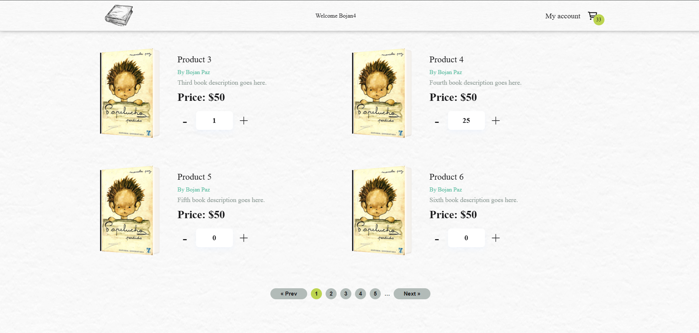
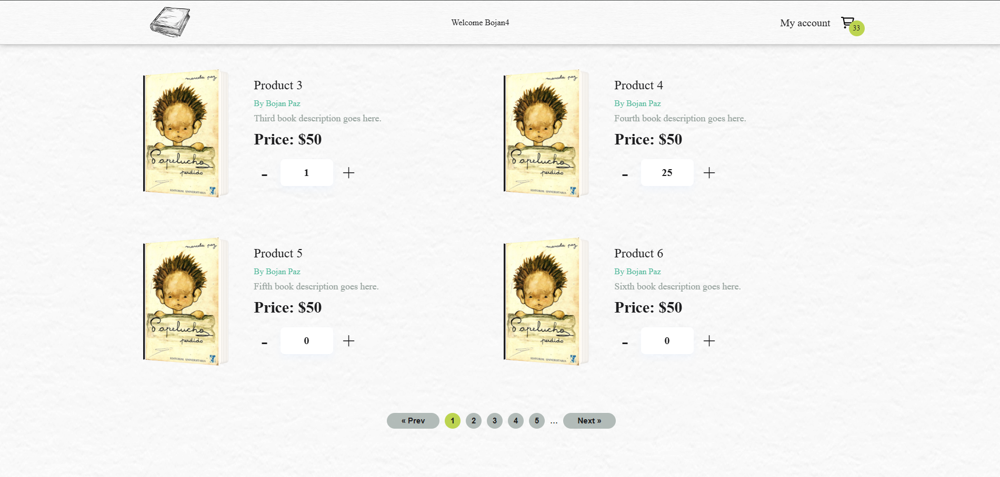
A React-based e-commerce web application developed as a practice project, showcasing advanced features such as product management, dynamic cart updates, and user interactions. Built with React, JavaScript, and modern state management techniques, it provides a seamless shopping experience, allowing users to add, remove, and update products in their cart in real-time.
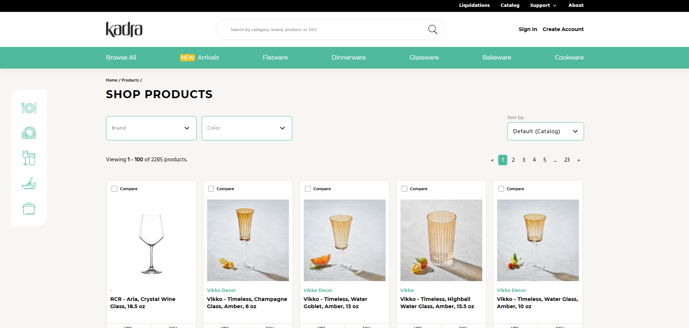
A dynamic website built using Vue.js, JavaScript, and WordPress, offering seamless product management and custom features. The combination of Vue.js and WordPress allows for a smooth user experience while providing flexible content management, enabling easy updates and real-time interactions with product listings and orders.
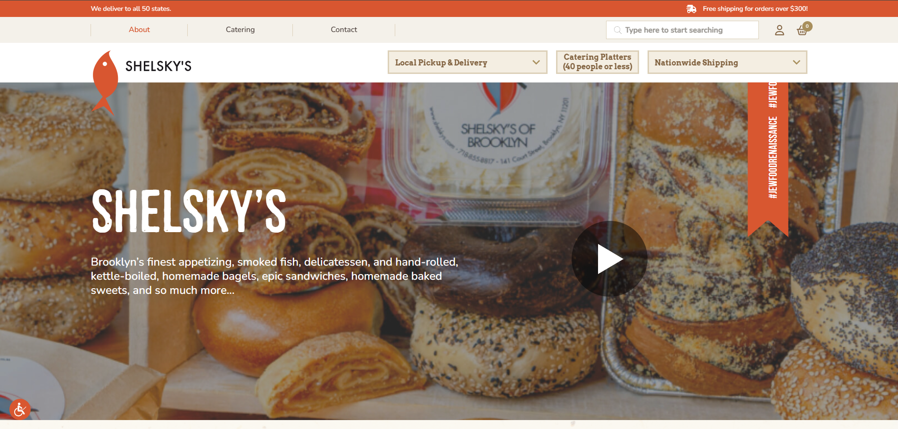
A WordPress, Woocommerce website with many food related products. Besides the custome theme, I used HTML, CSS and jQuery to finish this project for one of the most popular food places in Brooklyn.
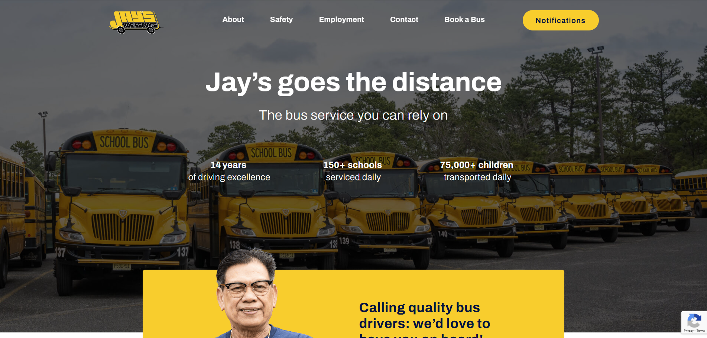
A presentational website built with WordPress, utilizing Advanced Custom Fields Pro to create custom fields with repeaters, allowing the client to easily update content as needed.
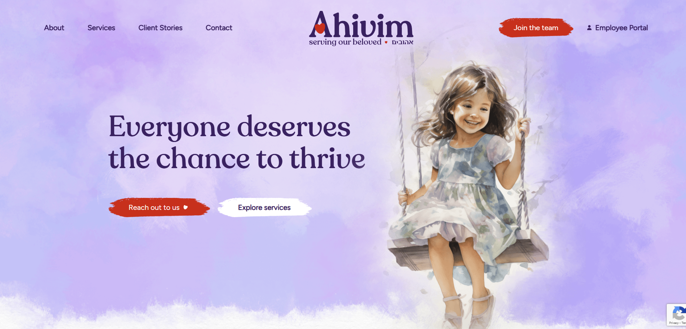
A service-oriented WordPress website, enhanced with Advanced Custom Fields Pro, providing custom fields and repeaters for easy content management. This allows the client to update and personalize key sections, such as services, client stories, and FAQs, ensuring content is flexible and easily updatable.
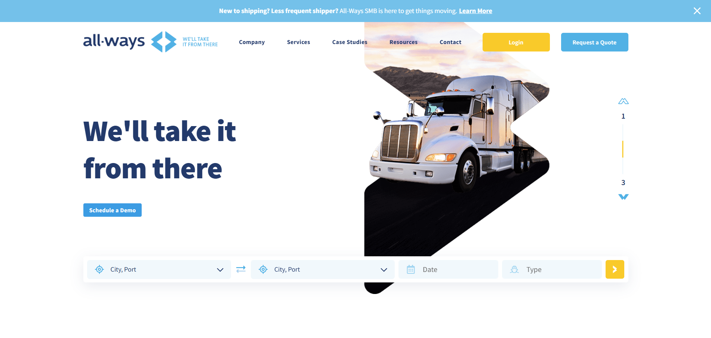
A streamlined WordPress website built with Advanced Custom Fields Pro, incorporating custom fields and repeaters to allow seamless content management. This empowers the client to manage and update shipping services, case studies, and other key sections with ease, ensuring the site remains relevant and up-to-date.
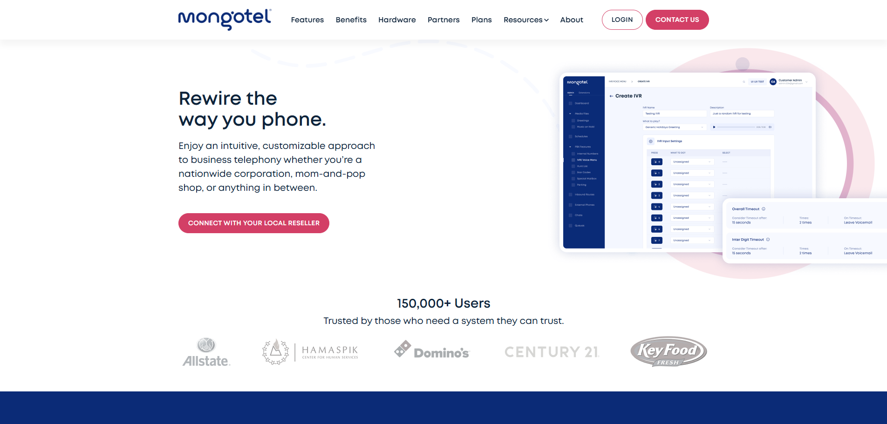
The Mongotel website was built with WordPress, leveraging the flexibility of Advanced Custom Fields Pro for custom content management. Custom post types and field groups were implemented to streamline the process, enabling easy updates and maintenance. Additionally, the integration of modern web technologies ensures smooth performance and user interaction, allowing for seamless updates to the site’s content and features.
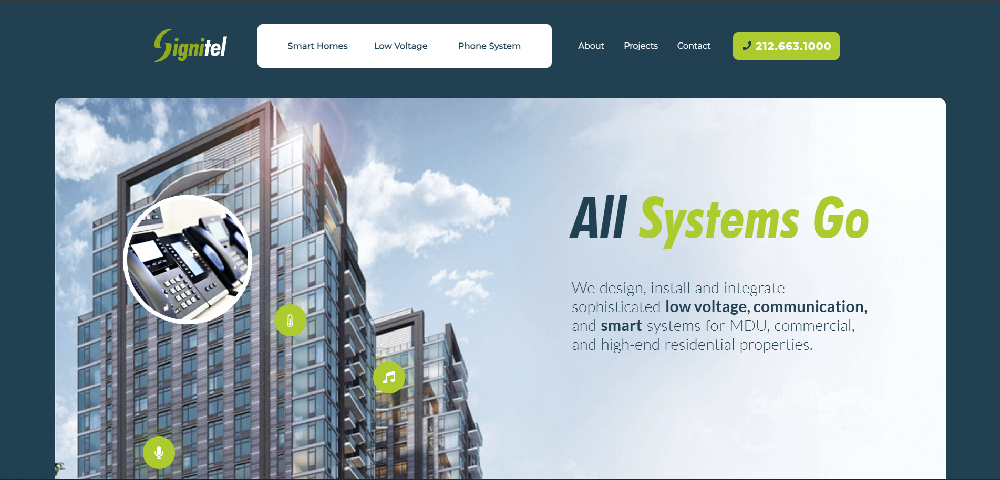
The Signitel website is built using WordPress, with custom post types and Advanced Custom Fields Pro (ACF Pro) to enable easy content management. ACF Pro allows the client to effortlessly update key sections like services and projects. The site’s dynamic functionality is further supported with modern web technologies, ensuring a smooth user experience and straightforward maintenance.
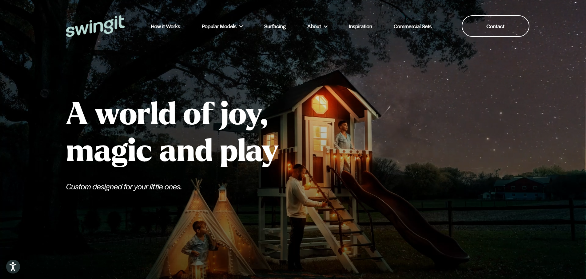
The SwingIt Playsets website was developed using WordPress, with the flexibility of Advanced Custom Fields Pro (ACF Pro) for easy content management. Custom post types and field groups were utilized to simplify the process of updating key sections, including popular models and customer testimonials. The site also incorporates responsive design and modern web technologies to deliver a smooth, engaging experience for users browsing playset options and customization features.
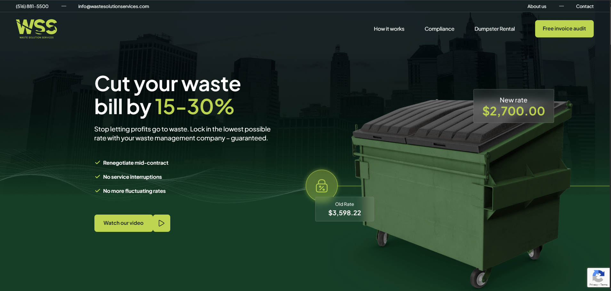
The Waste Solution Services website was built with WordPress, utilizing Advanced Custom Fields Pro (ACF Pro) for easy management of key content areas such as services, client testimonials, and cost-saving information. Custom post types were implemented to ensure a smooth, user-friendly experience, while responsive design and modern web technologies allow for quick updates and efficient content management.
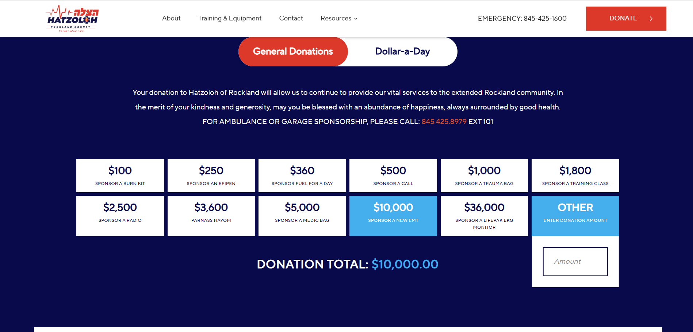
The Rockland Hatzoloh website is built with WordPress and integrates Gravity Forms for streamlined form management. Gravity Forms allows for easy creation and submission of various forms, including volunteer applications and donation forms, with powerful customization options. This ensures smooth data collection, enabling the organization to effectively manage user interactions and keep communication efficient and organized.

I am continuously working on new and exciting projects, enhancing my skills and exploring innovative solutions. Each day presents an opportunity to learn and create, as I take on new challenges and deliver high-quality work for a variety of clients.